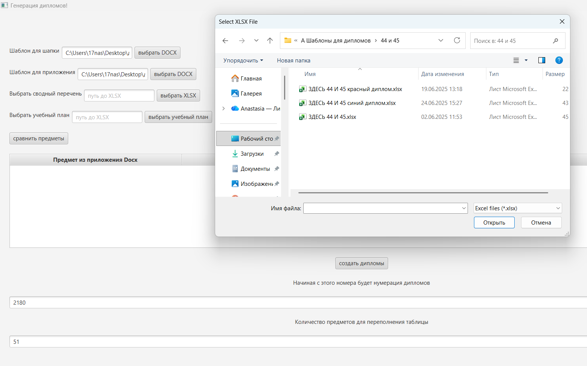

УДК 004.91+004.912
РАЗРАБОТКА МОДУЛЯ МИНИМИЗАЦИИ ОШИБОК ДОКУМЕНТООБОРОТА ДЕКАНАТА ПРИ ФОРМИРОВАНИИ ВЫПУСКНЫХ ДОКУМЕНТОВ
Кубанский государственный университет
ул. Ставропольская 149, 350040, Краснодар, Россия
Ключевые слова. документооборот, выпускные документы, приложение к диплому, автоматизация, XLSX, DOCX, семантическое сопоставление, расстояние Левенштейна.
Аннотация. В рамках работы разработан программный модуль для автоматизированного формирования диплома о высшем образовании и приложения к нему на основе сводной ведомости, учебного плана, которые представлены в формате файлов с расширением XLSX и DOCX. Предложена обработка, включающая импорт данных, синтаксическое восстановление структуры ведомости и семантическое сопоставление наименований дисциплин по метрике расстояния Левенштейна.
Введение. Подготовка и выдача документов о высшем образовании и приложений к ним выполняется по установленному порядку, который включает в себя требования к заполнению и учёту дипломов и приложений к ним [1]. Актуальность разработки программных средств для поддержки данного процесса определяется тем, что выпускная документация формируется вручную в процессе массовой обработки данных, которые поступают из нескольких источников и представлены в неоднородных форматах. В связи с этим разработка программного средства, ориентированного на автоматизированное создание выпускных документов, снижающее вероятность ошибок и уменьшение трудоёмкости при формировании комплекта выпускных документов, представляет собой актуальную научно-практическую задачу.
Разработка и реализация программного модуля. На вход модуль получает сводную ведомость успеваемости выпускников (XLSX), учебный план, как эталон структуры приложения (XLSX), шаблон диплома и приложения (DOCX). Дополнительный табличный источник персональных сведений (например, дата рождения, темы работ) применяется при отсутствии соответствующих полей в ведомости.
Обработка данных последовательна, в начале осуществляется импорт данных, далее восстановление структуры таблиц, сопоставление дисциплин, генерация DOCX и сохранение результатов (см. рисунок 1).

Решение реализовано как настольное приложение, в котором для графического интерфейса применена платформа JavaFX [2], а для работы с DOCX/XLSX – библиотека Apache POI (модули XWPF и XSSF) [3]. Выбор Kotlin на JVM обеспечивает совместимость с платформой Java и использование библиотек Apache POI. Выбор технологий также обусловлен наличием механизма контроля null‑значений на уровне системы типов, что обеспечивает релевантность при чтении не типизированных табличных данных [4].
Одним из существенных факторов, затрудняющих автоматизацию обработки образовательной документации, является высокая вариативность структуры электронных таблиц формата XLSX. На практике она проявляется в смещении столбцов, наличии служебных строк, использовании объединённых ячеек, формул и смешанных типов данных, что снижает эффективность методов обработки, основанных на фиксированной координатной адресации элементов таблицы. В целях повышения устойчивости и корректности обработки данных в разработанном программном модуле реализован подход синтаксической интерпретации табличной структуры, предполагающий выделение логических областей заголовков и данных на основе устойчивых текстовых и структурных маркеров, а также извлечение значений с учётом типа содержимого ячеек. Это обеспечивает приведение ведомостей к унифицированному внутреннему формату, что, в свою очередь, повышает надёжность последующих процедур.
Главной задачей процедуры согласования данных является устранение расхождений в текстовых наименованиях дисциплин, представленных в экзаменационных ведомостях и учебных планах, при сохранении их семантической эквивалентности. Для автоматизированного сопоставления дисциплин в разработанном программном модуле используется строковая метрика сходства, основанная на расстоянии Левенштейна [5]. Которое определяется, как минимальное количество операций вставки, удаления и замены символов, необходимых для преобразования одной строки в другую, в независимости от их размерности. Перед вычислением метрики выполняется предварительная нормализация строковых значений, включающая приведение к единому регистру, унификацию пробельных символов и стандартизацию пунктуации, что позволяет снизить влияние формальных различий в записи дисциплин. Для повышения надёжности сопоставления используется нормированная мера сходства, вычисляемая по формуле (1).
где s1, s2 – данные строки;
m, n – длины строк s1, s2 соответственно;
D(m,n) – расстояние Левенштейна.
После чего устанавливается повышенное пороговое значение коэффициента сходства (в реализации порядка 0,9), обеспечивающее минимизацию риска ошибочного объединения различных дисциплин. Наименования, не удовлетворяющие заданному порогу, автоматически выносятся в конец перечня дисциплин при формировании итогового приложения к диплому для дальнейшей проверки.
Конечным результатом является набор сформированных DOCX‑документов. При пакетной генерации выпускных документов, реализованы механизмы структурированного сохранения файлов по каждому выпускнику в отдельную директорию, название которой совпадает с ФИО студента, и поддержания состояния сквозной нумерации между последовательными запусками системы, что позволяет исключить ошибки сборки и дублирование документов.
Заключение. В результате проведённого исследования разработан программный модуль автоматизированного формирования диплома и приложения к диплому на основе обработки табличных данных формата XLSX и заполнения документов по шаблонам DOCX. Предложенный подход основан на объединении методов синтаксического восстановления структуры электронных ведомостей и семантического сопоставления наименований дисциплин с использованием строковой метрики сходства, вычисляемой на основе расстояния Левенштейна, с применением повышенного порогового контроля. Это обеспечивает уменьшение вероятности некорректного переноса оценок, пропусков дисциплин и рассогласования данных между учебным планом и ведомостями.
Библиографический список
- Об утверждении Порядка заполнения, учёта и выдачи документов о высшем образовании и о квалификации, приложений к ним и их дубликатов [Электронный ресурс]: приказ Министерства науки и высшего образования Российской Федерации от 27.07.2021 № 670. – Режим доступа: http://publication.pravo.gov.ru/Document/View/0001202108250039 (дата обращения: 13.03.2026);
- JavaFX (OpenJFX) [Электронный ресурс] // Официальная документация платформы графических интерфейсов. – Режим доступа: https://openjfx.io/ (дата обращения: 28.02.2026).
- Apache POI [Электронный ресурс] // Официальная документация: работа с DOCX (XWPF) и XLSX (XSSF). – Режим доступа: https://poi.apache.org/components/ (дата обращения: 13.03.2026);
- Null-safety в Kotlin (Null safety) [Электронный ресурс] // Kotlin Documentation. – Режим доступа: https://kotlinlang.org/docs/null-safety.html (дата обращения: 28.02.2026);
- Левенштейн, В. И. Двоичные коды с исправлением выпадений, вставок и замещений символов [Электронный ресурс] // Доклады АН СССР / В. И. Левенштейн. – 1965. – Т. 163. – № 4. – С. 845–848. – Режим доступа: https://www.mathnet.ru/rus/dan31411 (дата обращения: 13.03.2026);